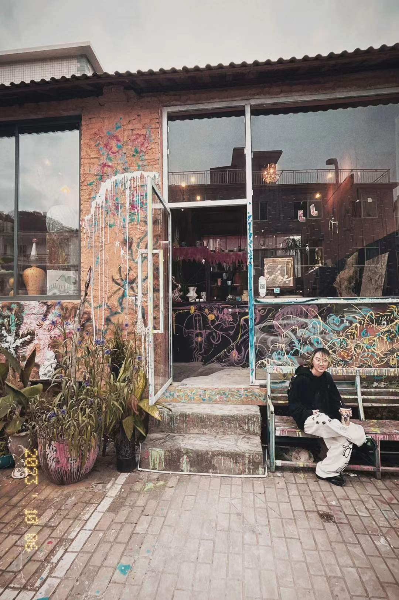

About
I am Jiaxin Wang, or Charleston.
I am an HCI researcher, designer, and digital artist. I am pursuing a dual degree at Duke Kunshan University & Duke University, majoring in Computation and Design, Digital Media track.
My main research interest is designing for wellbeing through participatory design, research-through-design, and soma design methods, particularly within embodied and tangible interaction.
I have worked on HCI research projects spanning embodied interaction for children’s learning, co-design for accessibility, and autobiographical soma design for wellbeing.
email: jw848@duke.edu
phone: +86 19878378408
linkedin: https://www.linkedin.com/in/charleston-wang-ba2636286/
